Volume
3
Volume
Large and small Athira has collected many things and has arranged them into different lots.
Look at the two things from the first lot.
Which is bigger? How did you find out? Now look at the two things from the second lot:
33


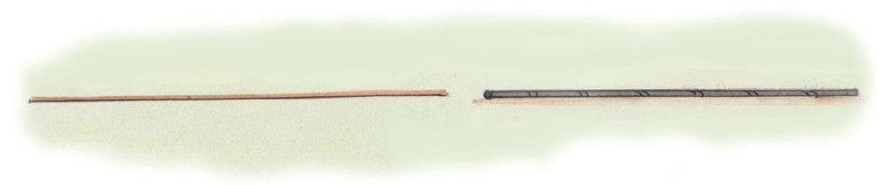

Volume
3
Volume
Large and small Athira has collected many things and has arranged them into different lots.
Look at the two things from the first lot.
Which is bigger? How did you find out? Now look at the two things from the second lot:
33

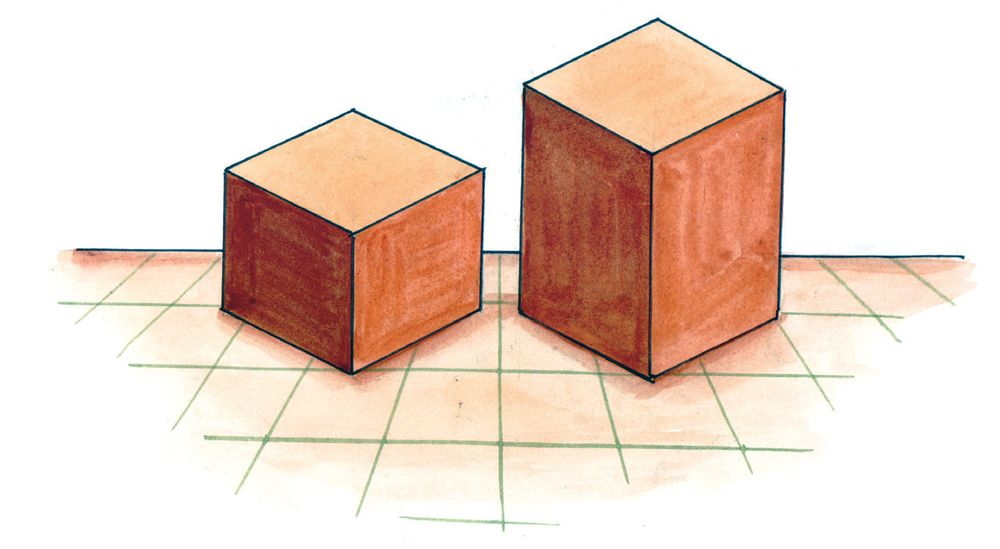
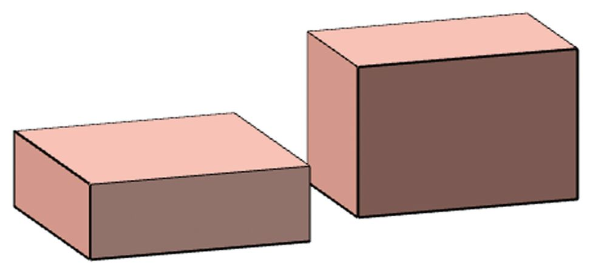
Standard VI - Mathematics
How do we find out which is bigger? To find out the bigger of the two sticks, we need only measure their lengths. What about two rectangles? We have to calculate their areas, right?
Rectangular blocks Look at two wooden blocks from Athira’s collection. Which is larger?
How did you decide? Now look at these two. Which is larger?
Let’s see how we can decide.
34

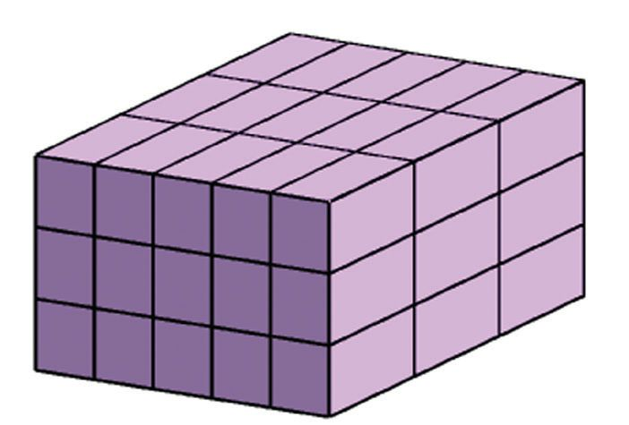
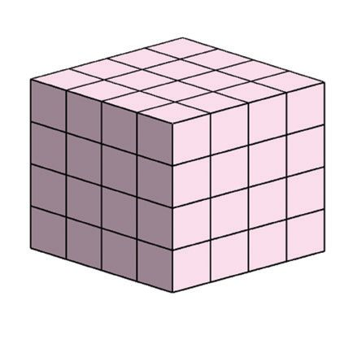

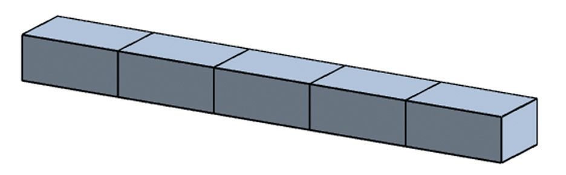

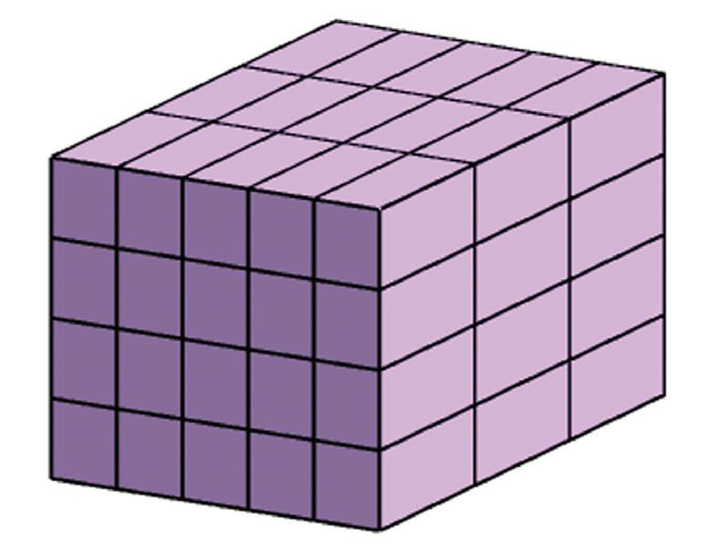

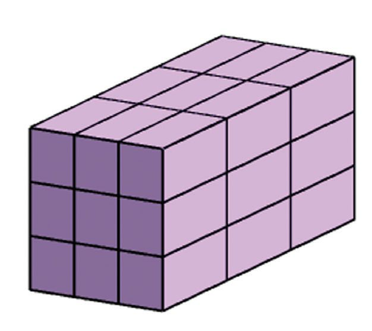
Volume
Size of a rectangular block Look at these rectangular blocks:
They are all made by stacking smaller blocks of the same size. Which of them is the largest? We need only count the little blocks in each, right? Can you find how many little blocks make up each of the blocks below? Is there a quick way to find the number of little blocks in each, without actually counting all?
How many small cubes are used to make this large cube? If one small block is removed from each corner of the large block, how many would be left?
Which of these is the largest? And the smallest?
35

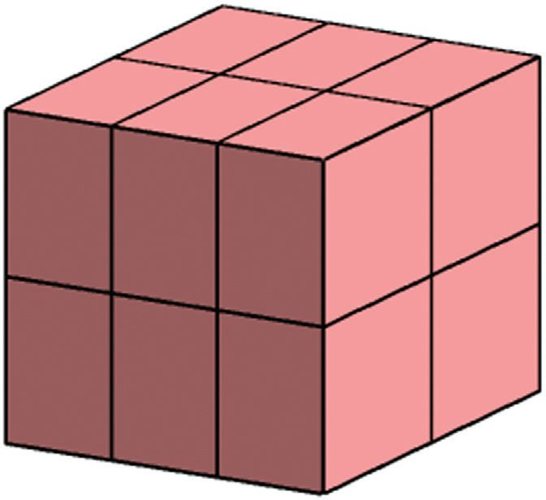
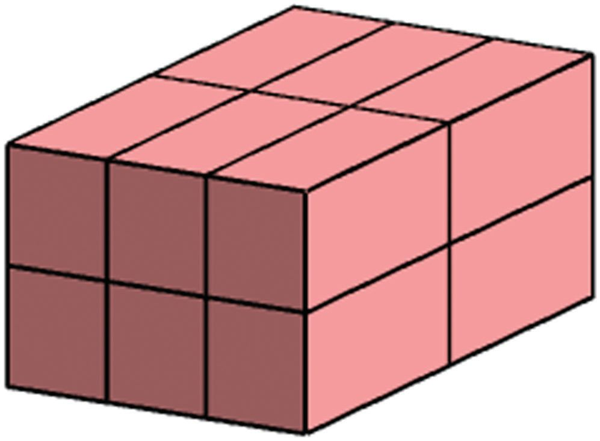
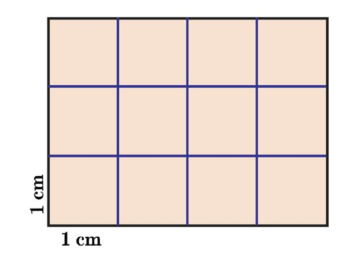

Standard VI - Mathematics
Look at these blocks:
How many small blocks are there in each? Do they have the same size? To compare sizes by just counting, what kind of little blocks should be used in both?
Size as number Look at this picture:
What is the area of this rectangle? How many small squares of side 1 centimetre are in it? 4 × 3 = 12 The area of a square of side 1 centimetre is 1 square centimetre; the area of the whole rectangle is 12 square centimetres.
36
All sides of the large cube are painted. How many small cubes would have no paint at all?

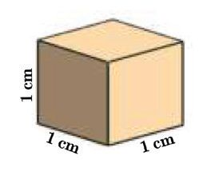
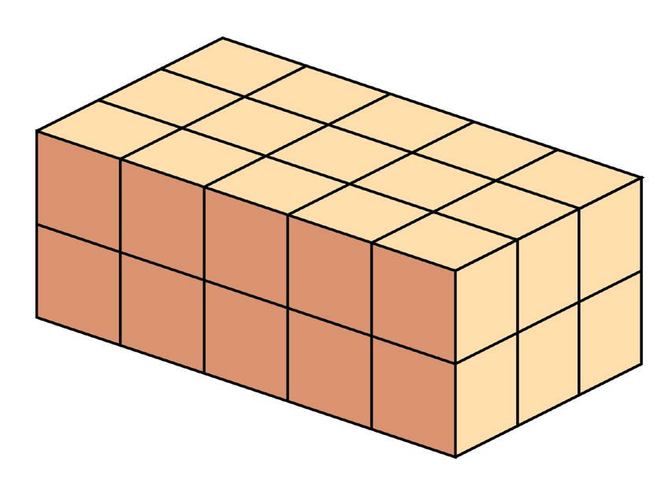

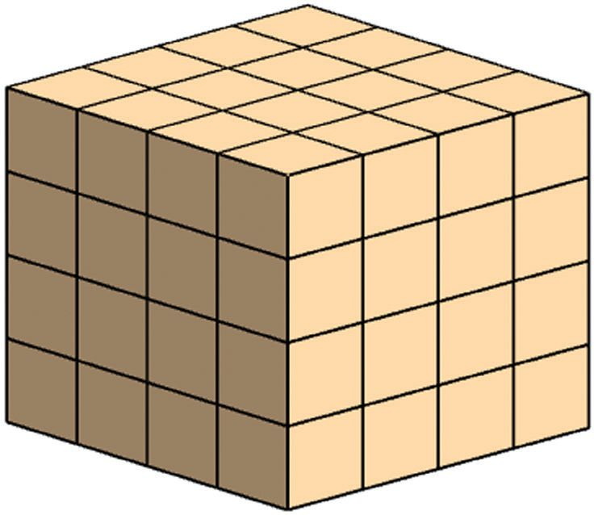

Volume
Now look at the rectangular block:
It is made by stacking cubes of side 1 centimetre. How many? So, the size of this block is equal to 30 such cubes. Size measured like this is called volume in mathematics. We say that a cube of side 1 centimetre has a volume of 1 cubic centimetre. 30 such cubes make the large block in the picture. Its volume is 30 cubic centimetres.
All blocks shown below are made up of cubes of side 1 centimetre. Calculate the volume of each:
37


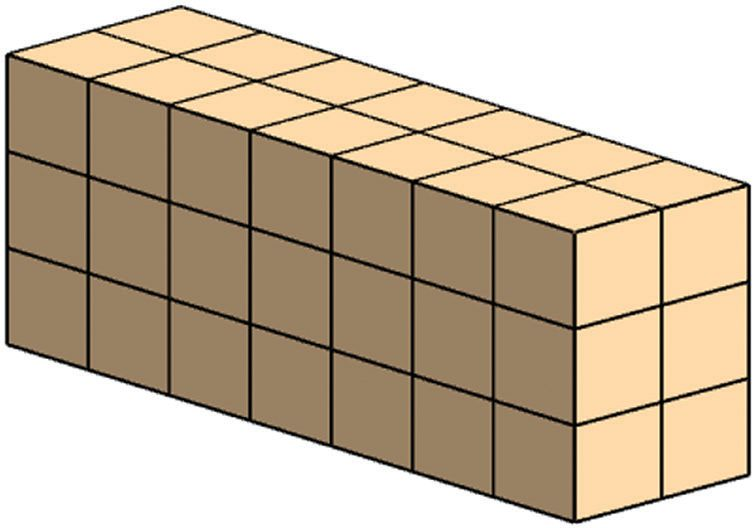
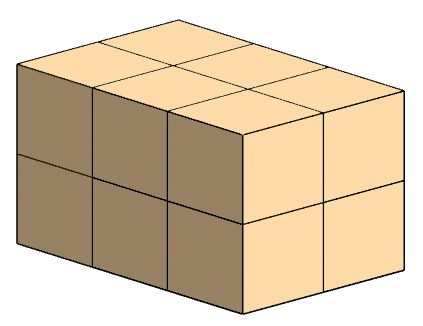


Standard VI - Mathematics
Volume calculation See this rectangular block:
1 cm
5 cm
m
3c
How do we calculate its volume? For that, we must find out how many cubes of side 1 centimetre we need to make it.
1 cm
5 cm
38
m
3c


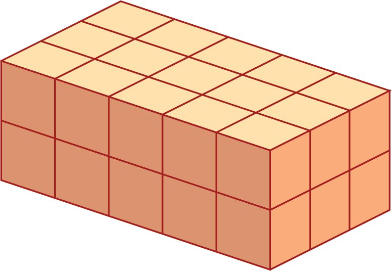
Volume
So, its volume is 15 cubic centimetres. What about this block?
2 cm
5 cm
m
3c
This can be made by stacking one over another, the two blocks seen first:
1 cm
1 cm
5 cm
m
3c
So, to make it, how many cubes of side 1 centimetre do we need?
Thus the volume of this block is 30 cubic centimetres.
39

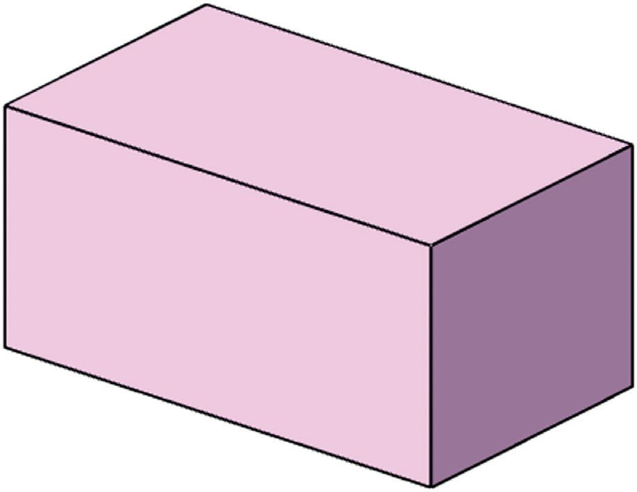
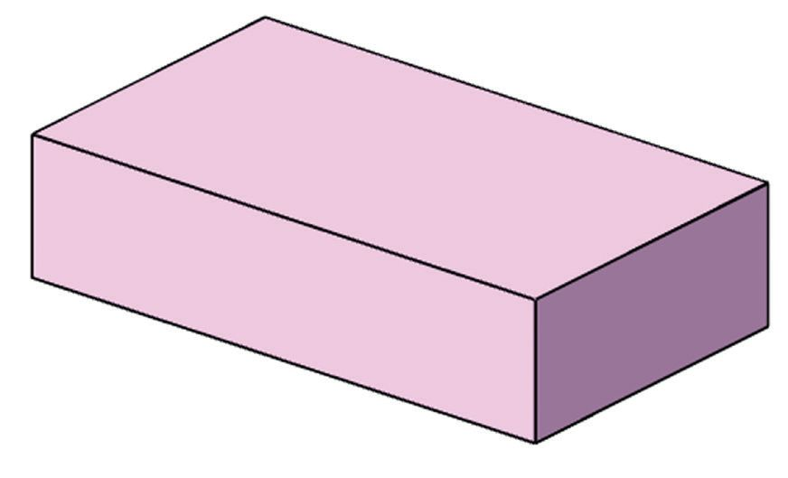

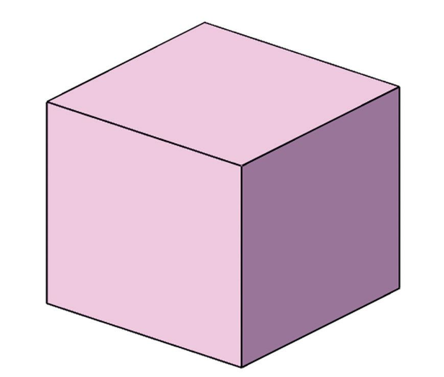

Standard VI - Mathematics
1 cm
3 cm
Like this, calculate the volume of each of the rectangular blocks shown below and write it beside each:
7 cm
m
6 cm
m
3c
5 cm
5 cm
4c
5 cm
m
5c
5 cm
m
4c
So, now you know how to calculate the volume of a rectangular block, don't you? The volume of a rectangular block is the product of its length, width and height.
(1) The length, width and height of a brick are 21 centimetres, 15 centimetres and 7 centimetres. What is its volume? (2) An iron cube is of side 8 centimetres. What is its volume? 1 cubic centimetre of iron weighs 8 grams. What is the weight of the this cube?
40


Volume
Volume and length
A wooden block of length 9 centimetres and width 4 centimetres has a volume of 180 cubic centimetres. What is its height? Volume is the product of length, width and height. So in this problem, the product of 9 and 4 multiplied by the height is 180. That is, 36 multiplied by the height gives 180. So to find out the height, we need only divide 180 by 36.
Area and volume What is the area of a rectangle of length 8 centimetres and width 2 centimetres? What about the volume of a rectangular block of length 8 centimetres, width 2 centimetres and height 1 centimetre?
The table shows the measurement of some rectangular blocks. Calculate the missing measures. 1 2 3 4 5 6 7
Length 3 cm 6 cm 6 cm 8 cm ... cm ... cm 14 cm
Width 8 cm 4 cm 4 cm ... cm 2 cm 2 cm ... cm
Height 7 cm 5 cm ... cm 2 cm 2 cm 4 cm 5 cm
Volume ... cc ... cc 48 cc 48 cc 48 cc 80 cc 210 cc
New shapes We can make shapes other than rectangular block, by stacking cubes. For example, see this:
It is made by stacking cubes of side 1 centimetre. Can you calculate its volume?
41

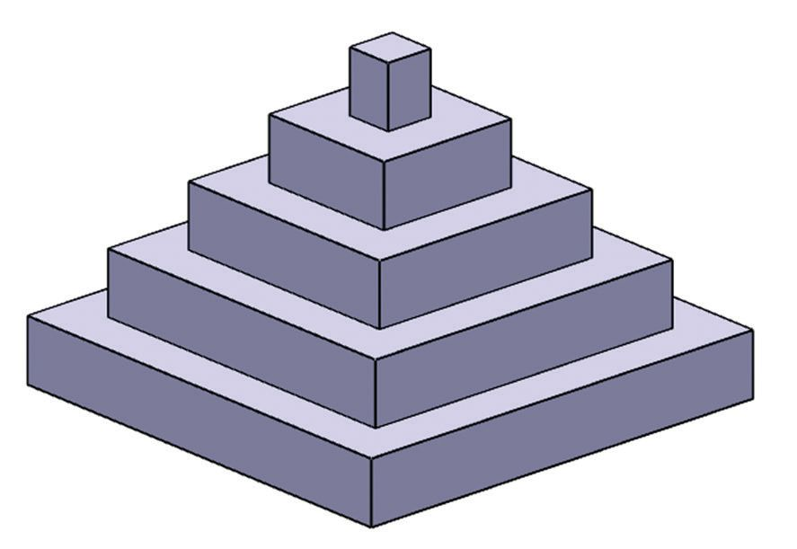

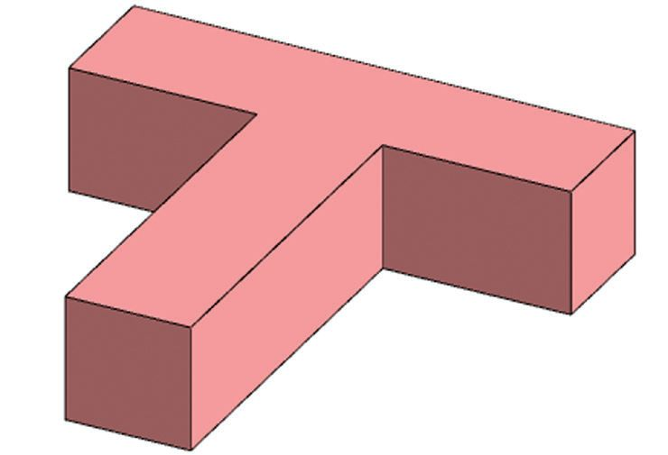


Standard VI - Mathematics
How many cubes are there at the very bottom? And in the step just above it? Thus we can count the number of cubes in each step. How many cubes in all? What is the volume of the stairs? Now look at this figure:
What is the volume of a rectangular block of length 4 centimetre, width 3 centimetre and height 1 centimetre? If the length, width and height are doubled, what happens to the volume?
It is made by stacking square blocks. The bottom block is of side 9 centimetres. As we move up, the sides decrease by 2 centimetres at each step. All blocks are of height 1 centimetre. What is the volume of this figure? Just calculate the volume of each square block and add. Try it. Calculate the volumes of the shapes shown below. All lengths are in centimetres. 12 4
20 4
4
8
12
16 4
6
2
6
4 11 3 4
42
3
6
4
8
6
4
3 4


Volume
Large measures What is the volume of a cube of side 1 metre? 1 metre means 100 centimetres. So, we must calculate the volume of a cube of side 100 centimetres. How much is it? We say that the volume of a cube of side 1 metre is 1 cubic metre. So, 1 cubic metre = 1000000 cubic centimetres. Volume of large objects are often said as cubic metres.
(1) A truck is loaded with sand, 4 metre long, 2 metre wide and 1 metre high. The price of 1 cubic metre of sand is 1000 rupees. What is the price of this truck load? (2) What is the volume in cubic centimetres of a platform 6 metres long, 1 metre wide and 50 centimetres high? (3) What is the volume of a piece of wood which is 5 metres long, 1 metre wide and 25 centimetres high? The price of 1 cubic metre of wood is 60000 rupees. What is the price of this piece of wood?
Capacity Look at this hollow box: It is made with thick wooden planks. Because of the thickness, its inner length, width and height are less than the outer measurements. The inner length, width and height are 40 centimetres, 20 centimetres and 10 centimetres. So, a rectangular block of these measurement can exactly fit into the space within this box.
43

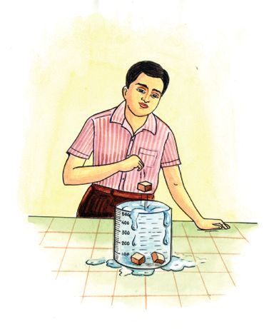
Standard VI - Mathematics
The volume of this rectangular block is the volume within the box. This volume is called the capacity of the box.
Litre and cubic metre
Thus the capacity of this box is; 40 × 20 × 10 = 8000 cubic centimetres. So, what is the capacity of a box whose inner length, width and height are 50 centimetres, 25 centimetres and 20 centimetres?
Liquid measures What is the capacity of a cubical vessel of inner side 10 centimetres?
1 litre is 1000 cubic centimetres and 1 cubic metres is 1000000 cubic centimetres. So, 1 cubic metre is 1000 litres.
10 × 10 × 10 = 1000 cubic centimetres 1 litre is the amount of water that fills this vessel. 1 litre = 1000 cubic centimetres We can look at this in another way. If a cube of side 10 centimetres is completely immersed in a vessel filled with water, then the amount of water that overflows would be 1 litre. So, how many litres of water do a vessel of length 20 centimetres, width 15 centimetres and height 10 centimetres contain? Let’s look at another problem: A rectangular tank of length 4 metres and height 1 2 2 metres can contain 15000 litres of water. What is the width of the tank? If we find the product of length, width and height in metres, we get the volume in cubic metres. Here the volume is given as 15000 litres.
44
In the water A vessel is filled with water. If a cube of side 1 centimetre is immersed into it, how many cubic centimetre of water would overflow? What if 20 such cubes are immersed?


Volume
That is, 15 cubic metres. The product of length and height is 4 × 2 12 = 10 So, width multiplied by 10 is 15. From this, we can calculate the width as 15 = 1 1 2 metres. 10 Now suppose this tank contains 6000 litres of water. What is the height of the water? The amount of water is 6 cubic metres. So, the product of the length and width of the tank and the height of the water, all in metres is 6. Product of length and width is 4 × 1 12 = 6 So, height is 6 ÷ 6 = 1 metre.
Raising water
A swimming pool is 25 metres long, 10 metres wide and 2 metres deep. It is half filled. How many litres of water does it contain now? 25 × 10 × 1 = 250 cubic metres = 250000 litres Suppose the water level is increased by 1 centimetre. How many more litres of water does it contain now?
(1) The inner sides of a cubical box are of length 4 centimetres. What is its capacity? How many cubes of side 2 centimetres can be stacked inside it? (2) The inner sides of a rectangular tank are 70 centimetres, 80 centimetres and 90 centimetres. How many litres of water can it contain? (3) The length and width of a rectangular box are 90 centimetres and 40 centimetres. It contains 180 litres of water. How high is the water level? (4) The inner length, width and height of a tank are 80 centimetres, 60 centimetres and 50 centimetres, and it contains water 15 centimetres high. How much more water is needed to fill it? (5) The panchayat decided to make a rectangular pond. The length, width and depth were decided to be 20 metres, 15 metres and 2 metres. How many litres of water is needed to fill this pond to a height of one and a half metres?
45

Standard VI - Mathematics
(6) The inner length and width of an aquarium are 60 centimetres and 30 centimetres. It is half filled with water. When a stone is immersed in it, the water level rose by 10 centimetres. What is the volume of the stone? (7) A rectangular iron block has length 20 centimetres, width 10 centimetres and height 5 centimetres. It is melted and recast into a cube. What is the length of a side of this cube? (8) A tank 2 metres long and 1 metre wide is to contain 10000 litres of water. What should be the height of the tank? (9) From the four corners of a square piece of paper of side 12 centimetres, small
squares of side 1 centimetre are cut off. The edges of this are bent up and joined to form a container of height 1 centimetre. What is the capacity of this container? If squares of side 2 centimetres are cut off, what would be the capacity?
46